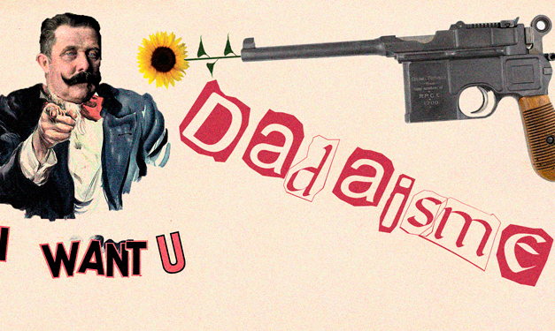

Jeg blev i mit første tema-forløb kastet ud i dadaismen, og hvis jeg skulle være helt ærlig var det ikke ligefrem stiarten der appelerede mest til mig på daværende tidspunkt. Det ændrede ikke på at jeg skulle lave et responsivt site, hvilket vil sige at sitet skulle fungere på både desktop og mobil. For at nå frem til det færdige site skulle vi følge nogle guidelines som blev præsenteret af undervisnerne. Vi startede med at lærer om det basale html, uden styling af CSS. Herefter blev vi introduceret til CSS, som vi brugte til at style websitet efter de krav som blev stilet.
Jeg havde som mange andre på studiet ikke kastet mig ud i at kode før, hvilket gjorde dette forløb meget spændene. Jeg var ok tilfreds koden dog var desginet utrolig grimt.